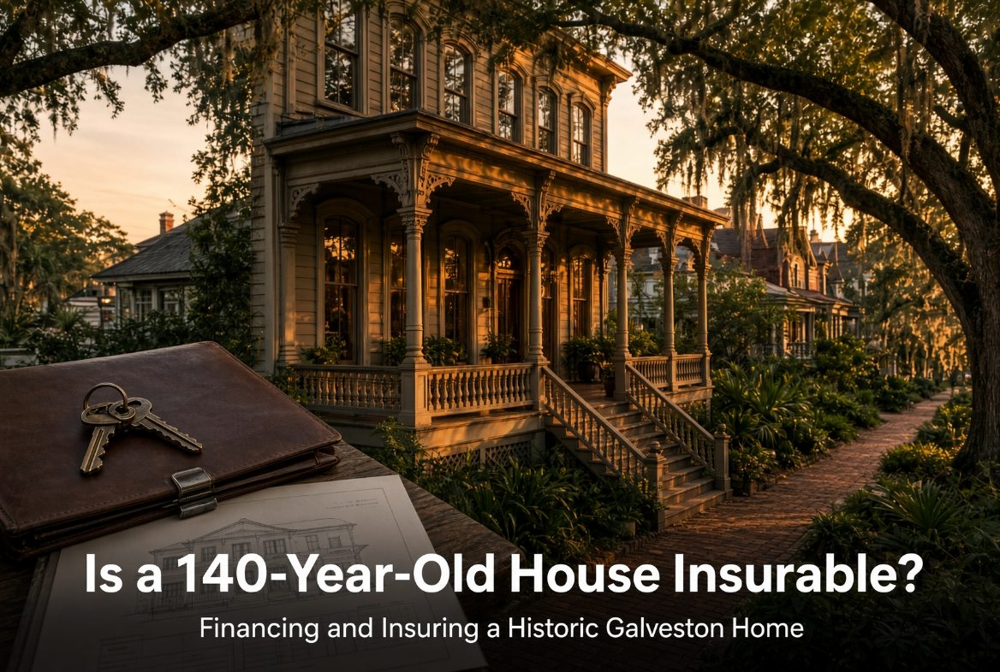

Is a 140-Year-Old House Insurable? Financing and Insuring a Historic Galveston Home

Yes — but not always with your first call, and not always at the rate you'd get on a 2005 build three blocks away. Here's what actually happens when you try to finance and insure a historic Galveston property, and how to get ahead of both.
Financing: the appraisal is the bottleneck
Historic homes are frequently harder to appraise than typical resale inventory, simply because there are fewer truly comparable sales to pull from. A 1,872-square-foot 1886 Victorian in a designated historic district doesn't comp cleanly against a 1995 subdivision build with similar square footage — different construction, different materials, different buyer pool. Lenders and appraisers who don't regularly work historic properties can slow a file down simply by not knowing how to value it.
What helps: use a lender who has closed historic-district purchases on the island before, and expect the appraisal to lean more heavily on other historic-district sales than on raw square-footage comps. If your lender is pulling comps from outside the district, push back before the appraisal comes in low.
Insurance: shop before you write the offer, not after
Older homes can be genuinely harder to insure — older electrical systems, older plumbing, roof age, and foundation type all factor into an insurer's underwriting, on top of Galveston's baseline coastal risk exposure. Some buyers find their first-choice carrier declines or prices historic properties high enough that shopping around isn't optional — it's necessary.
The practical move: get an insurance quote before your option period ends, not after closing. Ask the current owner which carrier insures the property now — a seller who's successfully insured the house for years is a legitimate resource, not just a courtesy question. If the listing discloses a new roof, verified electrical work, or updated systems, get that documentation to your insurer directly; it can materially change a quote.
What actually gets flagged in underwriting
Insurers and inspectors both tend to focus on the same handful of things in older homes:
- Roof age and condition — this is often the single biggest lever on your premium
- Electrical systems — knob-and-tube or ungrounded wiring is a common decline trigger; updated panels and wiring help significantly
- Plumbing — original supply lines and old cast iron drainage read differently to an insurer than updated PEX or copper
- Foundation type — pier-and-beam foundations common in older Galveston construction are well understood by local insurers, which works in your favor versus insurers unfamiliar with the building style
Get a specialist inspection, not a generic one
A general home inspector can miss issues specific to century-old construction. Where possible, use an inspector who specifically works historic properties — they know what's original, what's been altered, and what's a genuine problem versus a quirk of 1880s building methods.
The bottom line
None of this means a historic Galveston home is uninsurable or unfinanceable — thousands of them are financed and insured every year. It means the timeline has more steps than a standard resale, and the buyers who get through it cleanly are the ones who start the insurance and lending conversations during the option period, armed with the seller's disclosure and any documentation of updates, instead of waiting until the week before closing.
Kelli Owens is a Texas REALTOR® with The KO Realty Group, brokered by The Sears Group. TREC License #616346. This is general information, not legal, tax or insurance advice — confirm the rules, classifications and costs for your specific property with the City of Galveston and your own licensed professionals.
Send me an address. I'll tell you what an underwriter is going to ask about it.
Roof age, electrical, plumbing and foundation are what price a historic policy. Knowing which of them is a problem before your option period ends is the whole game.